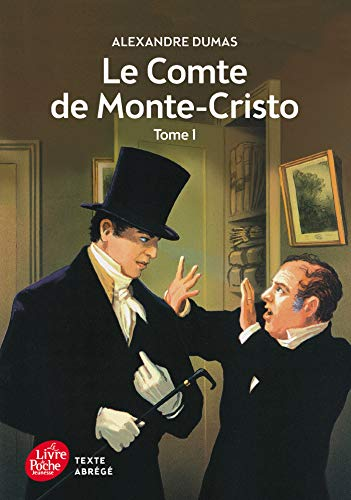

Comment devenir comte de Monte-Cristo quand on est simple marin? Ce roman est le récit d'une extraordinaire métamorphose. Espérant modestement debenir capitaine, Edmond Dantès se heurte pourtant à la conspiration la plus lâche. Dans les geôles du château d'If, ou il a été injustement jeté, Edmond entame la mue d'un être rivé à la plus dévorante des passions: la vengeance. Innocent décrété coupable par les calculs de ses ennemis et le cynisme de toute une époque, Dantès ne s'en laissera plus conter: à lui intrigues et dissimulation. Pour faire tomber les masques il lui faudra s'en forger un, pétri dans la rancoeur des années perdues. Palpitant roman d'aventures, devenu le modèle du genre, cette traversée épique du XIX eme siècle précipite les personnages de Marseille à Paris en passant par Rome et la Méditerranée. Le Comte de Monte-Cristo répond aux mesquineries du siècle par le souffle d'une odyssée.

«Tout m'avale... Je suis avalée par le fleuve trop grand, par le ciel trop haut, par les fleurs trop fragiles, par les papillons trop craintifs, par le visage trop beau de ma mère...»Les enfants en mènent large. Ils peuvent dire pis qu'aimer, pis que pendre. Ils ont tous les droits Entre vingt et vingt-trois ans (l'âge de ce roman), on a toutes les lois, toutes en même temps. Si on est doué, on les apprend. Si on est pas content, on se déprend, en se souvenant, en imaginant.

Mais que fait ce sang sur le pull de Jennifer ? Pour me reconstituer moi-même, j'ai suivi la procédure réservée aux affaires criminelles.